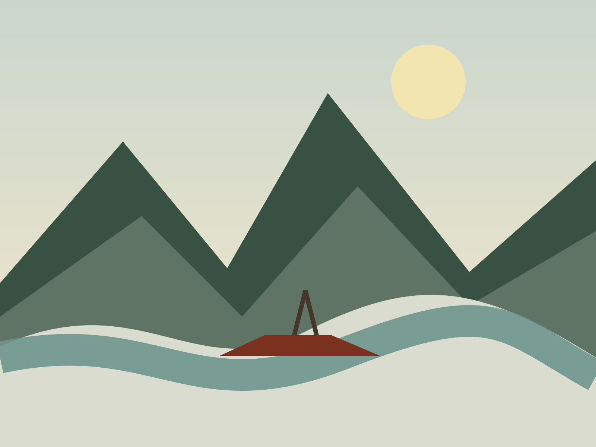

Expect full days outside, uneven ground, and carrying your own day load.

Alaska · Yukon · Northwest Territories
Go where the
road gives up.
Human-scale expeditions through big northern landscapes, built around wildlife, weather, campfire meals, and enough time to actually look around.
Find your expedition →FIELD STATUS●SUMMER DEPARTURES OPENWATER 6°C18H DAYLIGHTGROUPS 4–8SATELLITE COMMS
2026 departures
Three ways north.
JUN 18Brooks Range Traverse
Tundra hiking · remote camp
Yukon River by Canoe
Moving camp · intermediate
Arctic Wildlife Week
Photography · lodge based

Field style
Small groups. Real weather.
Trips cap at eight guests. Guides cook, teach, read conditions, and make decisions with the landscape—not against it.
4–8 guestsLocal guidesLow-impact camps
Field notes
Before you go.
Trip readiness
Remote does not have to mean mysterious.
Routes and camp decisions respond to river, wind, visibility, wildlife, and fire conditions.
Every departure includes a precise packing system and a pre-trip gear check.
Guides carry communications, medical equipment, and written evacuation protocols.